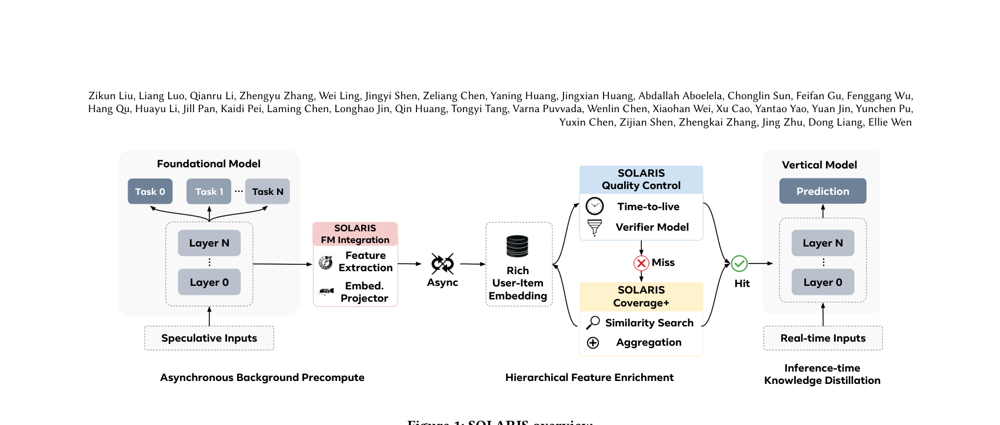

SOLARIS: Speculative Offloading of Latent-bAsed Representation for Inference Scaling (面向推理扩展的投机式潜在表征卸载)
- 会议/期刊: SIGIR 2026 (Industry Track)
- 推荐链路定位: 精排 (Final Stage Ranking / CTR-CVR Prediction)
- 研究方向: 去偏公平、可信隐私与工业架构 / CTR/CVR 预估与特征交叉
- 论文原文: https://arxiv.org/abs/2604.12110v2
- 开源代码: 暂未开源
TL;DR (核心速览)
针对基础模型 (FM) 因算力过高无法在线实时服务、而传统软标签知识蒸馏迁移率仅 20–25% 且仅限训练期的痛点，SOLARIS 借鉴投机解码思想，异步预计算并缓存 FM 的用户-物品交互表征，配合验证器筛选、TTL 缓存与层次化特征补全，在推理时向垂直模型 (VM) 直接注入表征。在 Meta 广告系统十多个生产模型上实现 BCE 相对下降 0.05–0.10%、迁移率提升至 42–44%（约 2 倍），线上广告收入 +0.67%。
Background & Motivation (背景与动机)
- 领域背景与主流范式: 推荐系统遵循"召回 → 粗排 → 精排"多级流水线，精排阶段使用资源密集型模型分析数千信号。近年推荐 scaling law 推动基础模型 (FM) 规模空前膨胀，离线评估性能持续提升，但实时服务不可行，工业界普遍退化为知识蒸馏到小型垂直模型 (VM)。
- 现有方法局限 (Limitations of Prior Work):
- 迁移率与泛化性受限: 基于软标签的蒸馏 [2,11,17,30] 迁移率通常仅 20–25%，且预测标签与特定任务强耦合，难以泛化。
- 可用性与覆盖受限: 知识迁移仅发生在训练期（标签可得时），推理阶段完全错失知识共享机会。
- 嵌入共享的开销矛盾: 直接复用上游表征虽有效，但带来显著计算与存储开销。
- 核心挑战 (Key Challenge): FM 表征蕴含最丰富的用户-物品交互知识，但为每个
<user, item>对实时生成表征的基础设施成本不可承受；简单增加网络深度或常规蒸馏无法突破软标签的信息瓶颈。 - 核心洞察与切入点 (Key Insight): 作者观察到用户偏好在数小时内保持稳定——当前请求中超过 60% 的物品候选在过去 6 小时内已被排序过。因此可"投机"预测未来请求所需的用户-物品对，在后台异步预计算其 FM 表征并缓存，将昂贵推理从延迟敏感的服务路径中解耦，实现"推理时知识蒸馏"。
Problem Formulation & Method (问题定义与方法架构)
1. 符号定义与输入表征 (Notations & Input Representations)
- 用户集 \(\mathcal{U}\)、广告/物品集 \(\mathcal{I}\)，请求以 \((u, i)\) 对形式到达精排阶段。
- FM 输入为异构特征：稠密特征（MLP 投影为低维嵌入）、稀疏类别特征（Embedding Bag 池化）、变长序列行为特征（事件序列建模）。
- FM 输出：取最后一个共享交互层的输出作为用户-物品交互表征，经自编码器 [27,35] 压缩为紧凑定长向量 \(\mathbf{e}_{u,i}\)，作为 VM 的额外输入特征。
- VM 输出：CTR / CVR 预测概率。
2. 整体流水线 (Overall Architecture)
数据流：请求到达 → 多级排序将候选缩至数百 → 验证器模型（当前 VM 预测分）筛选 top 20% 高相关候选 → 后台异步调用 FM 生成 \(\mathbf{e}_{u,i}\) 并写入分布式缓存（键为 <user, item>）→ VM 在线查询缓存，命中则拼接为特征，未命中/过期则以零张量占位并排队等待下一刷新周期 → 层次化特征补全（聚合用户表征 / 相似用户表征）兜底覆盖。
flowchart TD
A["输入层: 用户/广告特征 + 实时行为序列"] --> B["多级排序: 候选缩至数百"]
B --> C["验证器模型: 筛选 top 20% 高相关候选"]
C --> D["异步后台预计算: FM 共享层输出 → 自编码器压缩"]
D --> E["分布式缓存 <user,item> + TTL 失效"]
E --> F{"缓存命中?"}
F -->|命中| G["VM 拼接 FM 表征特征"]
F -->|未命中| H["层次化特征补全: 聚合用户表征 / KNN 相似用户表征 / 零张量占位"]
H --> G
G --> I["VM 输出 CTR/CVR 预测"]图1：SOLARIS 概览模型，利用用户和广告特征将候选范围缩小至数百个条目。3）最终阶段排序 [3, 10, 23]，该阶段使用资源密集型模型分析数千个信号（包括实时用户活动），以选出用于竞价和投放的顶级条目。在我们的系统中，SOLARIS 服务于最终阶段排序模型。
3. 核心模块设计与数学原理 (Key Designs & Formulations)
(1) 直接嵌入式知识迁移 (Direct Embedding-based Transfer) 区别于软标签蒸馏，SOLARIS 直接迁移 FM 共享交互层输出的用户-物品表征 \(\mathbf{e}_{u,i} \in \mathbb{R}^{d}\)（经自编码器压缩至定长 \(d\)），作为 VM 的稠密特征输入。物理直觉：中间层表征保留了跨域、多目标优化下的整体交互知识，信息带宽远高于单一任务的软标签概率分布，因而迁移率更高、泛化性更强。该机制与 FM 架构无关 (FM-agnostic)，适用于所有多任务多标签式 FM。
(2) 投机式异步预计算 (Speculative Embedding Precomputation)
- 验证器机制: 以当前 VM 的预测分作为轻量验证器，仅对预测相关性足够高的 <user, item> 对（top 20%）执行 FM 预计算与缓存，将算力聚焦于最可能被需要的候选——对应投机解码中"投机—验证"范式。
- TTL 缓存失效: 缓存读取设 TTL（典型数小时），利用用户偏好短期稳定性保证表征新鲜度；未命中时以零张量占位并排队刷新。
(3) 层次化特征补全 (Hierarchical Feature Enrichment)
原生 <user, item> 表征覆盖率约 50%（生产环境实测 40%），长尾物品与新用户尤甚。两级补全：
- 聚合用户表征: 对用户过去 24 小时内所有可用 <user, item> 表征求均值（显式排除当前对），即 \(\bar{\mathbf{e}}_u = \frac{1}{|\mathcal{I}_u^{\text{cache}}|}\sum_{i \in \mathcal{I}_u^{\text{cache}}} \mathbf{e}_{u,i}\)，将有效覆盖提升至约 85–90%。
- 相似性表征: 专用 FM 生成用户嵌入，KNN（余弦相似度，取 100 近邻）构建用户聚类表；对缺失对查询近邻的 <neighbor, item> 表征，采用距离加权平均或最近邻选取两种策略，覆盖再增约 30%（生产 40% → 70%）。
4. 训练目标、负采样与推理复杂度 (Optimization, Negative Sampling & Complexity)
- 损失函数: 原文未给出显式总损失公式；VM 沿用生产环境的二分类交叉熵 (BCE) 训练，FM 在线训练以适配分布漂移。评估指标为 BCE 相对下降百分比。
- 训练负采样策略: 原文未报告（工业广告场景，正样本为点击/转化，负样本为曝光未点击，具体采样细节未披露）。
- 时间与空间复杂度: 核心优势在于将 FM 前向推理从在线路径完全卸载至后台异步服务，在线仅增加一次缓存查询（O(1) 哈希查找）与特征拼接，无额外在线延迟开销。空间开销为分布式缓存存储
<user, item>表征；层次化补全避免了对全量用户-物品对的线性蒸馏成本。原文未报告具体 GPU 显存、单次推理毫秒数或训练单 epoch 耗时。
Experimental Setup & Evaluation Protocol (实验设置与评估协议)
- 数据集统计与预处理: 本文为工业系统论文，未使用公开基准数据集，实验基于 Meta 广告系统真实线上流量（每日数十亿请求）。原文未报告用户数、物品数、交互数等统计量。
| 数据集 (Dataset) | 用户数 (#Users) | 物品数 (#Items) | 交互数 (#Interactions) | 稀疏度/密度 (Sparsity) | 模态/辅助特征说明 |
|---|---|---|---|---|---|
| Meta Ads 生产流量 | 原文未报告 | 原文未报告 | 每日数十亿请求 | 原文未报告 | 用户人口统计、行为序列、广告属性 |
- 数据划分方式 (Splitting Strategy): 采用线上真实流量部署评估 + 离线训练/评估实验（覆盖率研究）。原文未明确说明时间切分细节，但强调线上 A/B 式部署对比（SOLARIS vs. 无 SOLARIS 的基线生产系统），不存在未来信息泄露问题（线上实时预测）。
- 排名评测协议 (Ranking Protocol): 非传统召回排序评测，而是精排预测质量评估——以 BCE 相对下降衡量，线上以收入等顶层业务指标衡量。原文未报告 Full-Ranking 或 Sampled Ranking 协议。
- 评价指标与显著性检验: 相对 BCE 损失下降 (%)、迁移率 (Transfer Ratio)、特征覆盖率、线上广告收入增益。原文未报告多随机种子方差或配对显著性检验。
Key Experimental Results (核心实验结果)
1. 主实验对比 (Main Results)
表1：SOLARIS 嵌入在多种任务上提升垂直模型性能（相对 BCE 损失下降 %）。
| 任务类别 | 子任务 | 相对 BCE 损失下降 (%) |
|---|---|---|
| CTR | Facebook Feed | 0.09 |
| CTR | Facebook Reels | 0.08 |
| CTR | 0.05 | |
| CTR | Instagram Link Click | 0.05 |
| CVR | Facebook Feed + Reels | 0.10 |
| CVR | Offsite Conversion | 0.05 |
- 迁移率: Instagram 任务 42%、Facebook 产品 44%，相较此前基于蒸馏的方法约 2 倍提升。
- 线上收益: 部署于 Meta 广告系统，10+ 生产模型 RLL 提升最高 0.2%，覆盖率提升 30%，全球广告收入 +0.67%（约 1 亿美元量级）。
2. 消融实验与控制变量分析 (Ablation Study)
表2：SOLARIS 特征覆盖率研究（Instagram CTR 上的 BCE 下降）。
| 特征覆盖率 | 20% | 50% | 60% | 100% |
|---|---|---|---|---|
| BCE 下降 | 0.05% | 0.1% | 0.13% | 0.3% |
- 覆盖率消融: 覆盖率每提升 30%，log loss 改善约 0.05%，在生产模型上视为显著；覆盖率与性能近似单调正相关，说明提升覆盖是解锁更多收入的关键。
- 聚合用户表征: 作为独立特征部署，Instagram CTR 额外 BCE 改善 0.03%，已上线 10 个下游模型，带来 0.07% 广告收入增益。
- 相似性表征: KNN 取 100 近邻，覆盖率 40% → 70%，Instagram CTR 上 BCE 改善 0.02%，约为覆盖率研究头寸空间 (0.05%) 的 40%——符合预期，因近邻填补的表征质量较低。
- 原文未报告严格的逐模块移除式消融表，也未控制参数量对齐等变量。
3. 稀疏度/冷启动分桶与超参敏感度 (Sparsity Buckets & Hyperparameters)
- 长尾/冷启动表现: 原文指出覆盖率缺口在长尾物品、新用户、新兴交互上尤为突出，层次化补全正是为此设计；但未给出分桶量化结果。
- 关键超参数敏感度: 验证器筛选比例（top 20%）、TTL 时长（数小时）、KNN 近邻数（100）、聚合窗口（24 小时）为关键设计参数，原文未报告系统性的敏感度曲线。
- 线上 A/B 测试结果: 已包含。Meta 广告系统真实部署，每日数十亿请求，10+ 生产模型，广告收入 +0.67%（约 1 亿美元量级），RLL 最高提升 0.2%，覆盖率提升 30%。
Highlights, Limitations & Critiques (亮点、局限与审稿级批判)
- 核心亮点与可迁移性:
- 范式创新: 将 LLM 投机解码思想迁移至推荐系统知识迁移，把"训练期软标签蒸馏"升级为"推理时表征注入"，迁移率翻倍且与 FM 架构无关，可迁移至任意多级排序流水线。
- 工程完备性: 验证器筛选 + TTL 缓存 + 层次化补全构成完整的覆盖率-新鲜度-成本三角权衡方案，对工业界极具参考价值。
- 零在线延迟开销: 异步预计算将昂贵 FM 推理彻底移出延迟敏感路径，是落地可行性的关键。
- 局限性与审稿视角批判:
- 评估协议非标准: 无公开数据集、无标准排序指标（Recall/NDCG）、无显著性检验与多随机种子方差，作为 Industry Track 可接受，但学术可比性弱。
- 仅限最终排序阶段: 早期排序阶段广告量多 100 倍，覆盖率与资源约束使其暂不可用，限制了收益上限。
- 相似性补全收益有限: KNN 补全仅兑现 40% 头寸空间，聚类方法对 VM 增益有限，作者亦承认需探索 A2A（广告-广告）与混合策略。
- 公司特定性: 作者自述部分结论受 Meta 业务需求与合作关系影响，泛化性存疑；核心超参（TTL、top 20%、KNN 数）缺乏敏感度分析。
- 表征质量与新鲜度的权衡: TTL 过期后零张量占位可能引入特征分布偏移，原文未量化其对模型稳定性的影响。
Rating (四维评分)
- 方法创新性 (Novelty): ⭐⭐⭐⭐
- 评估协议与实验扎实度 (Protocol & Experiments): ⭐⭐⭐
- 写作与数学规范度 (Clarity & Rigor): ⭐⭐⭐
- 工业落地与复现价值 (Industrial & Practical Value): ⭐⭐⭐⭐⭐
论文图表
